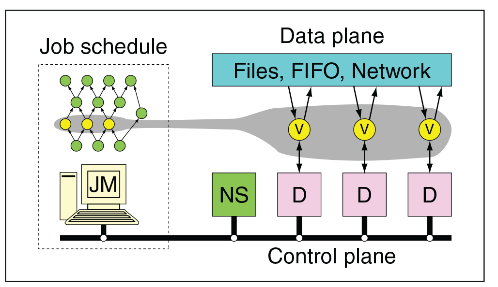

Dryad: Distributed Data-Parallel Programs from Sequential Building Blocks
Dryad is a general-purpose distributed execution engine for coarse-grain data-parallel applications. A Dryad application combines computational "vertices" with communication "channels" to form a dataflow graph. Dryad runs the application by executing the vertices of this graph on a set of available computers, communicating as appropriate through flies, TCP pipes, and shared-memory FIFOs.
The vertices provided by the application developer are quite simple and are usually written as sequential programs with no thread creation or locking. Concurrency arises from Dryad scheduling vertices to run simultaneously on multiple computers, or on multiple CPU cores within a computer.  The application can discover the size and placement of data at run time, and modify the graph as the computation progresses to make efficient use of the available resources. Dryad is designed to scale from powerful multi-core single computers, through small clusters of computers, to data centers with thousands of computers. The Dryad execution engine handles all the difficult problems of creating a large distributed, concurrent application: scheduling the use of computers and their CPUs, recovering from communication or computer failures, and transporting data between vertices.
Dryad is Microsoft’s answer to the MapReduce paradigm, albeit at a (slightly) lower level with greater flexibility. Like MapReduce, Dryad allows developers to think about what to do with the data, and Dryad itself takes care of distribution, fault-tolerance, stragglers etc. Unlike MapReduce, Dryad enables creating extensive data flow models using DAGs or directed acyclic graphs. Dryad also adds increased flexibility for communication between computation nodes in a DAG via disk, TCP pipes, and shared memory queues, as opposed to only disk-based communication promoted by MapReduce. This could possibly allow fully in-memory data flow models for faster data mining and iterative jobs.